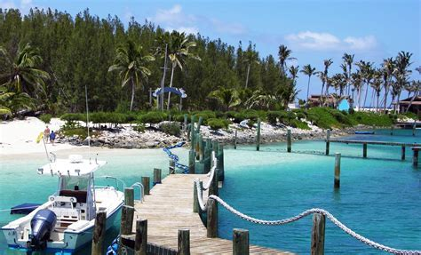

Home. George Town. Dunmore Town. Freeport. Grand Bahama. Blue Lagoon Island.
Blue Lagoon Island is a private island located 5 km (3 miles) from Nassau, Bahamas and serves as a local tourist attraction. It consists of beaches spanning massive distances and perfectly blue oceans.
A beach lovers paradise, Blue Lagoon Island provides picture-perfect picture taking scenery, as well as an oppurtinity to just relax and take in the beautiful surroundings of the Island, allowed one to let go of any stress built up prior to the vacation.
